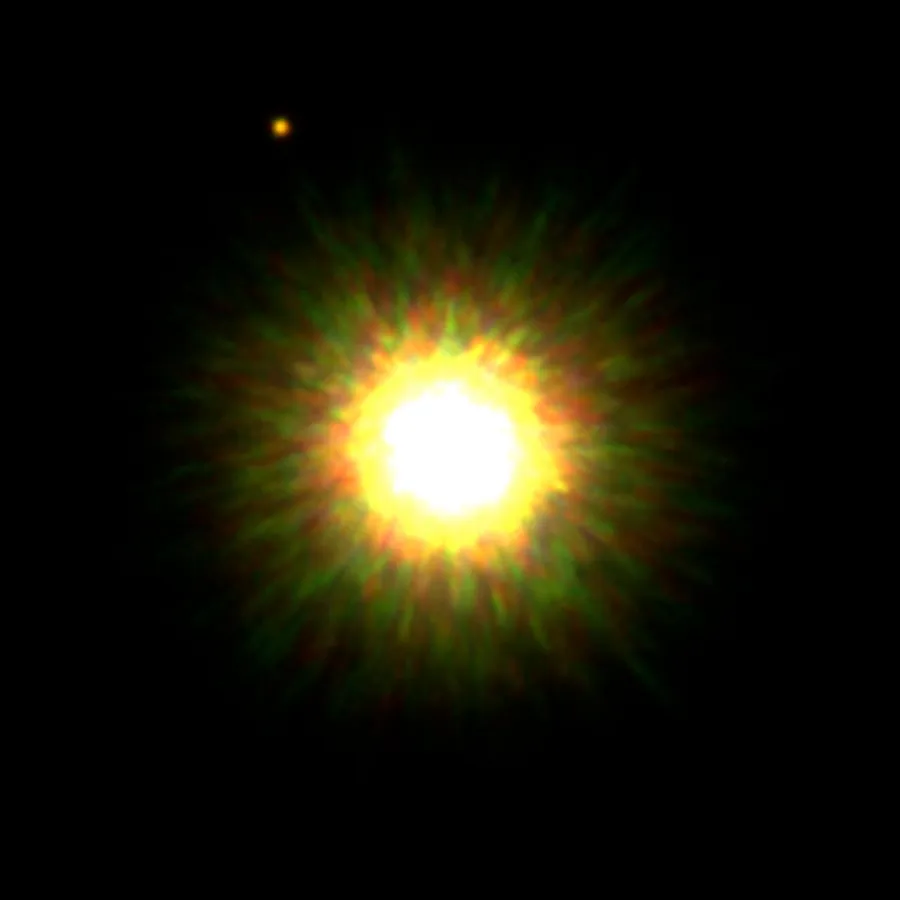

14. September 2008
Erstes Bild eines wahrscheinlichen Planeten bei einem sonnenähnlichen Stern
Mit dem Gemini-Nord-Teleskop auf Hawaii wurde neben dem jungen Stern 1RXS J160929.1-210524 ein Begleiter mit etwa acht Jupitermassen abgebildet. Das Infrarotbild, aufgenommen mit der adaptiven Optik Altair und der Kamera NIRI, zeigt ihn als kleinen Punkt links oberhalb des hellen Sterns.
Der Begleiter ist rund 330-mal so weit vom Stern entfernt wie die Erde von der Sonne. 2008 galt er als wahrscheinlicher Planet; im Juni 2010 bestätigten weitere Beobachtungen, dass er sich gemeinsam mit dem etwa 500 Lichtjahre entfernten Stern bewegt.
Quellen: Gemini Observatory / NOIRLab: "First Picture of Likely Planet around Sun-like Star" (gemini0807)., 14.09.2008; Gemini Observatory / NOIRLab: "First Directly Imaged Planet Confirmed Around Sun-Like Star" (gemini1008)., 29.06.2010; NOIRLab: "First Picture of Likely Planet around Sun-like Star" (image gemini1008a)., 29.06.2010